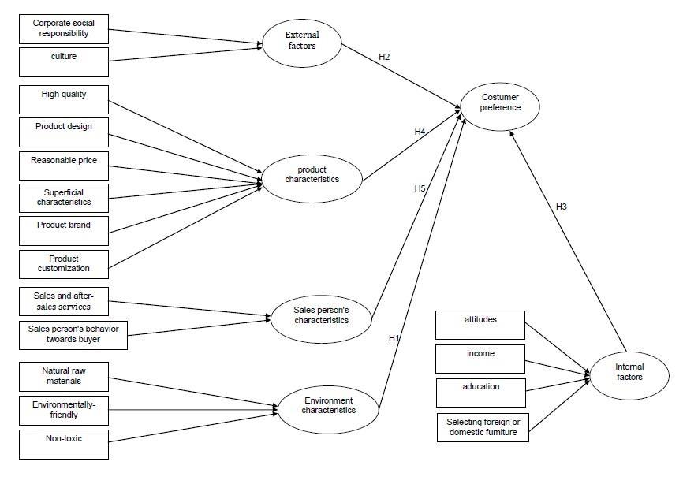
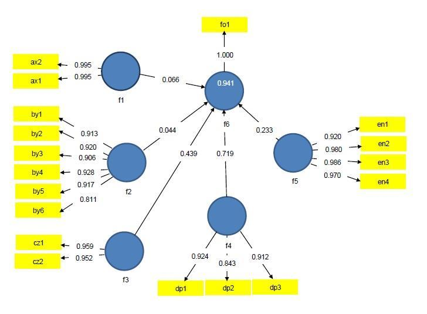

Gudarzi 2022 Wooden Furniture SEM
Gudarzi 2022 Wooden Furniture SEM
作者：Elham Gudarzi, Ajang Tajdini, Shademan Pourmousa, Ahmad Jahan Latibari, Mehran Roohnia 通訊作者：Ajang Tajdini（ajang.tajdini@kiau.ac.ir） 期刊：BioResources, 17(1), 1551–1565 DOI：10.15376/biores.17.1.1551-1565 收稿：2021年4月21日；接受：2022年1月10日；發表：2022年1月14日
摘要（中文）
本研究針對伊朗消費者在購買家用與辦公木製家具時的決策偏好進行探討。研究以文獻為基礎提出概念模型，並對德黑蘭三個家具市場中正在購買木製家具的顧客進行面對面出口調查，應用 SmartPLS 軟體執行PLS-SEM分析。結果顯示：安全與環境特性（Cohen's $f^2 = 0.576$，強效果）、銷售人員特性（$f^2 = 0.197$，中效果）、企業責任因素（$f^2 = 0.058$，弱效果）、內部因素（$f^2 = 0.029$，弱效果）、產品特性（$f^2 = 0.023$，弱效果）依序對消費偏好有最大影響。這五項自變數共解釋消費偏好變異的 93.8%（$R^2 = 0.938$）。
大綱
- 緒論：全球木製家具市場背景，伊朗家具產業概況
- 文獻回顧：消費行為、消費者感知價值（consumer perceived value，CPV）、購買偏好影響因素
- 研究方法：德黑蘭三市場現場調查（2019年4–9月），回收率57.4%，N=100，Likert 1–5量表，SmartPLS PLS-SEM
- 結果與討論
- 信度分析（Cronbach's $\alpha$、CR、AVE、rho_A）
- KMO 與 Bartlett 檢定（KMO = 0.901）
- 正交因子分析（17項子因素）
- 測量模型（收斂效度、判別效度）
- 假設檢定（5項假設，H4 不顯著）
- 結構模型品質（$R^2$、$f^2$）
- 結論
主要發現
- safety and environment dominates wooden furniture consumer preferences
- salesperson characteristics have medium effect on furniture purchase decision
- product characteristics not significant in wooden furniture SEM
- PLS-SEM explains 93.8 percent of furniture consumer preference variance
- corporate responsibility weakly affects Iranian wooden furniture preference
研究方法
Gudarzi 2022 Methods
重要概念
- PLS-SEM — 偏最小平方結構方程模型，適用於非常態分佈資料、小樣本與形成性指標
- consumer perceived value — 消費者感知價值，是預測顧客忠誠度、滿意度與購買意圖的核心指標
- conjoint analysis — 本文採用 SEM 而非 conjoint，但引用了以 conjoint 研究木材 CSR 的相關文獻
- Cohen f2 — 效果量指標：$f^2 \geq 0.35$ 為強效果，$\geq 0.15$ 為中效果，$< 0.15$ 為弱效果
假設與結果表
| 假設 | 路徑 | 路徑係數 | t值 | p值 | 結果 |
|---|---|---|---|---|---|
| H1 | ECh → CP | 0.719 | 6.000 | 0.000 | 支持 |
| H2 | EF → CP | 0.066 | 2.280 | 0.023 | 支持 |
| H3 | IF → CP | 0.233 | 2.160 | 0.024 | 支持 |
| H4 | PCh → CP | 0.044 | 0.370 | 0.709 | 拒絕 |
| H5 | SCh → CP | 0.430 | 3.090 | 0.002 | 支持 |
（ECh = 安全與環境特性，EF = 外部因素，IF = 內部因素，PCh = 產品特性，SCh = 銷售人員特性，CP = 消費者偏好）
核心結果圖

圖1：研究概念模型（含假設路徑）
圖2：PLS-SEM 測量模型（標準化估計值）